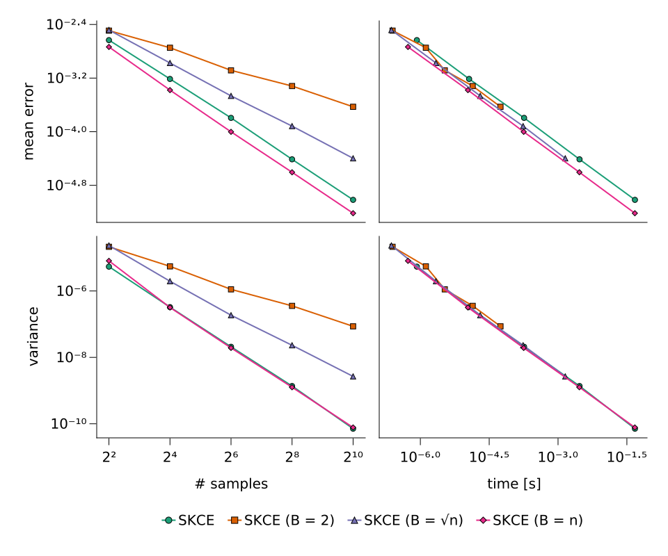
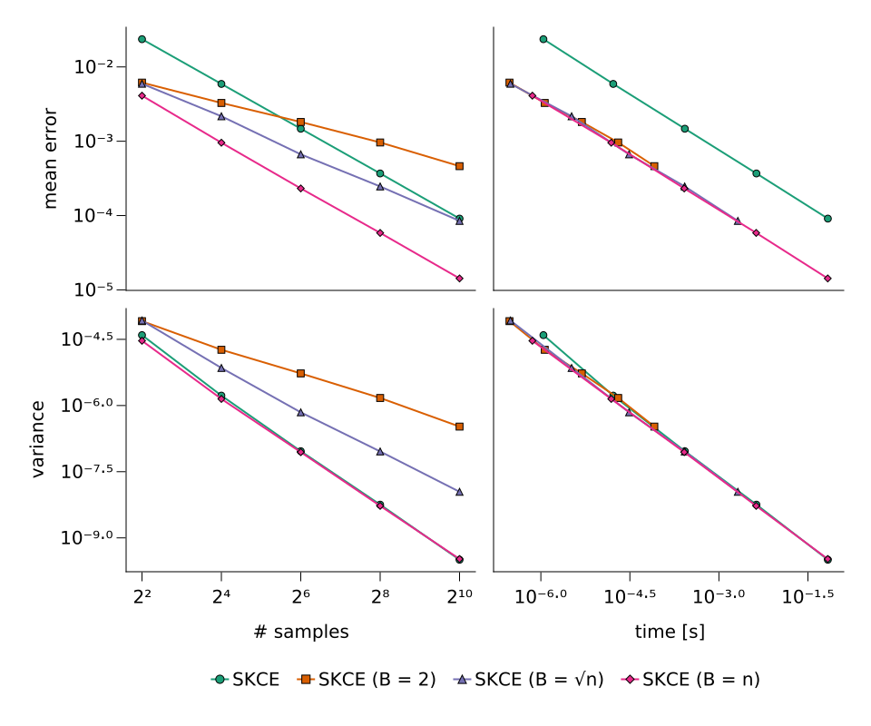
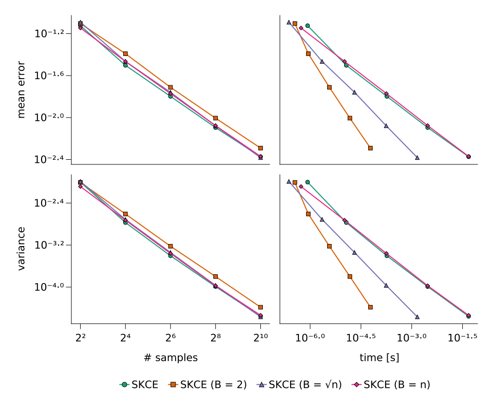
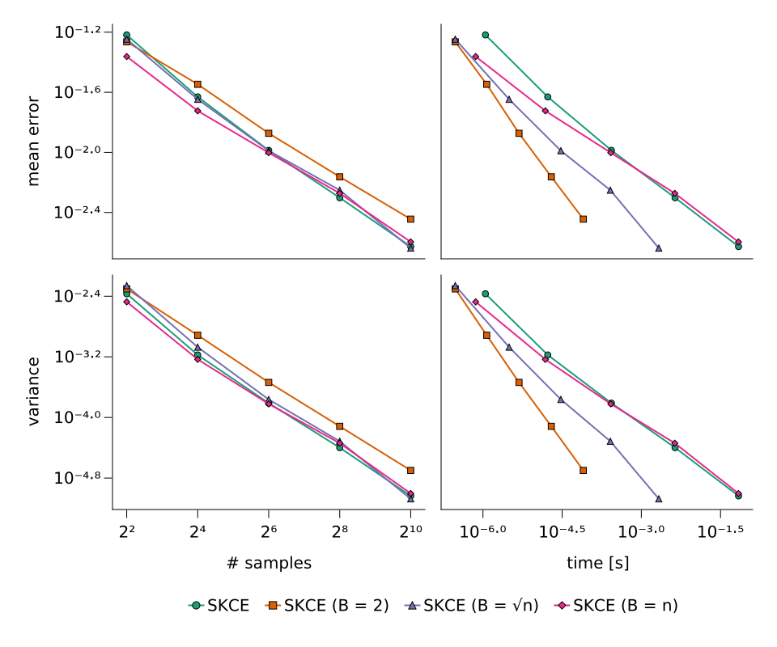
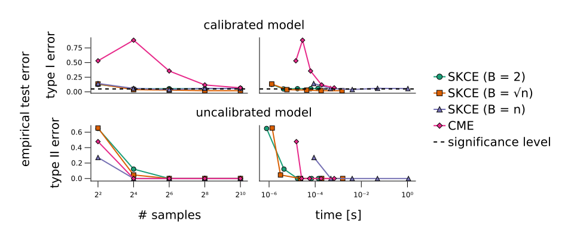
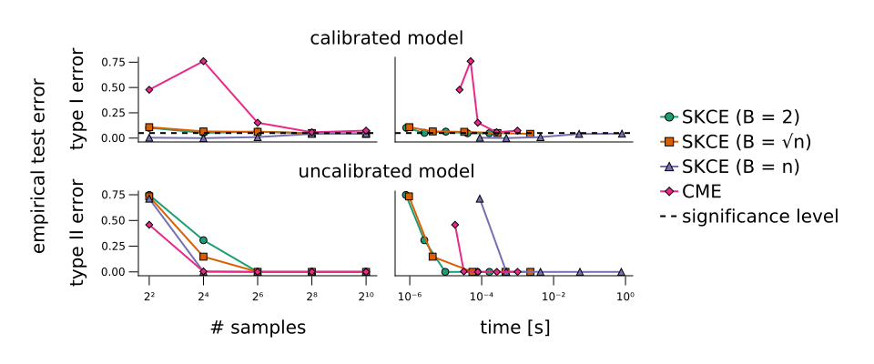

Synthetic models

You are seeing the HTML output generated by Documenter.jl and Literate.jl from the Julia source file. The corresponding notebook can be viewed in nbviewer, and the plain script output can be found here.
If you want to run the experiments, make sure you have an identical environment. Please use Julia 1.5.3 and activate and instantiate the environment using this Project.toml file and this Manifest.toml file.
The Github repository contains more detailed instructions and a nix project environment with a pinned Julia binary for improved reproducibility.
Packages
using CSV
using CairoMakie
using CalibrationErrors
using CalibrationErrorsDistributions
using CalibrationTests
using DataFrames
using Distributions
using FillArrays
using ProgressLogging
using Query
using Showoff
using StatsBase
using LinearAlgebra
using Printf
using Random
using CairoMakie.AbstractPlotting.ColorSchemes: Dark2_8
using Logging: with_logger
using TerminalLoggers: TerminalLogger
# set random seed
Random.seed!(1234)
# create path before saving
function wsavefig(file, fig=current_figure())
mkpath(dirname(file))
return save(file, fig)
end
# define progress logging frontend
const PROGRESSLOGGER = TerminalLogger()
# define non-intrusive plotting style
set_theme!(
Theme(;
Axis=(
rightspinevisible=false,
topspinevisible=false,
xgridvisible=false,
ygridvisible=false,
),
Legend=(framevisible=false,),
),
)Synthetic models
We study two setups with $d$-dimensional targets $Y$ and normal distributions $P_X$ of the form $\mathcal{N}(c \mathbf{1}_d, 0.1^2 \mathbf{I}_d)$ as predictions, where $c \sim \mathrm{U}(0, 1)$. Since calibration analysis is only based on the targets and predicted distributions, we neglect features $X$ in these experiments and specify only the distributions of $Y$ and $P_X$.
Calibrated setup
In the first setup we simulate a calibrated model. We achieve this by sampling targets from the predicted distributions, i.e., by defining the conditional distribution of $Y$ given $P_X$ as
\[Y \,|\, P_X = \mathcal{N}(\mu, \Sigma) \sim \mathcal{N}(\mu, \Sigma).\]
function calibrated_model(dim::Int, nsamples::Int)
# sample predictions
predictions = [MvNormal(Fill(rand(), dim), 0.1) for _ in 1:nsamples]
# sample targets
targets = map(rand, predictions)
return predictions, targets
endcalibrated_model (generic function with 1 method)
Uncalibrated setup
In the second setup we simulate an uncalibrated model of the form
\[Y \,|\, P_X = \mathcal{N}(\mu, \Sigma) \sim \mathcal{N}([0.1, \mu_2, \ldots, \mu_d], \Sigma).\]
function uncalibrated_model(dim::Int, nsamples::Int)
# sample predictions
predictions = [MvNormal(Fill(rand(), dim), 0.1) for _ in 1:nsamples]
# sample targets
targets = map(rand, predictions)
altdist = Normal(0.1, 0.1)
for t in targets
t[1] = rand(altdist)
end
return predictions, targets
enduncalibrated_model (generic function with 1 method)
Convergence and computation time of estimators
We perform an evaluation of the convergence and computation time of the biased estimator $\widehat{\mathrm{SKCE}}_k$, the unbiased estimator $\widehat{\mathrm{SKCE}}_{k,B}$ with blocks of size $B \in \{2, \sqrt{n}, n\}$. We use the tensor product kernel
\[\begin{aligned} k\big((p, y), (p', y')\big) &= \exp{\big(- W_2(p, p')\big)} \exp{\big(-(y - y')^2/2\big)} \\ &= \exp{\big(-\sqrt{(m_p - m_{p'})^2 + (\sigma_p - \sigma_{p'})^2}\big)} \exp{\big( - (y - y')^2/2\big)}, \end{aligned}\]
where $W_2$ is the 2-Wasserstein distance and $m_p, m_{p'}$ and $\sigma_p, \sigma_{p'}$ denote the mean and the standard deviation of the normal distributions $p$ and $p'$.
Ground truth
For both models, we have to "evaluate" the true calibration error. Generally, the error depends on the model (and hence also dimension $d$) and the kernel. If the model is calibrated, we know that the calibration error is zero. For the uncalibrated model, we estimate the ground truth with the minimum-variance unbiased estimator as the mean of SKCE estimates for 1000 randomly sampled datasets with 1000 data points.
true_SKCE(::typeof(calibrated_model), kernel; dim::Int) = 0.0
function true_SKCE(model::typeof(uncalibrated_model), kernel; dim::Int)
estimator = UnbiasedSKCE(kernel)
return mean(calibrationerror(estimator, model(dim, 1_000)...) for _ in 1:1_000)
endtrue_SKCE (generic function with 2 methods)
Benchmarking
The following two functions implement the benchmarking. We sample 500 datasets of 4, 16, 64, 256, and 1024 data points each for the models of dimensions $d=1$ and $d=10$. For each of the datasets, we evaluate the different SKCE estimators. We compute the mean absolute error, the variance, and the minimum computation time for the estimates, grouped by the dimension of the model and the number of samples in the dataset.
function benchmark_estimator(estimator, model; dim::Int, nsamples::Int, groundtruth)
# compute the estimator (potentially depending on number of samples)
_estimator = estimator(nsamples)
# cache for calibration error estimates
estimates = Vector{Float64}(undef, 500)
mintime = Inf
name = @sprintf("benchmarking (dim = %2d, nsamples = %4d)", dim, nsamples)
@progress name = name for i in eachindex(estimates)
# sample predictions and targets
predictions, targets = model(dim, nsamples)
# define benchmark function
benchmark_f =
let estimator = _estimator, predictions = predictions, targets = targets
() -> @timed calibrationerror(estimator, predictions, targets)
end
# precompile function
benchmark_f()
# compute calibration error and obtain elapsed time
val, t = benchmark_f()
# only keep minimum execution time
mintime = min(mintime, t)
# save error estimate
estimates[i] = val
end
# save the mean absolute deviation and the variance of the estimates
meanerror = mean(abs(x - groundtruth) for x in estimates)
variance = var(estimates)
return (; dim, nsamples, meanerror, variance, mintime)
end
function benchmark_estimators(model)
# output file
filename = joinpath("data", "synthetic", "errors_$(model).csv")
# check if results exist
isfile(filename) && return DataFrame(CSV.File(filename))
# define kernel
kernel = WassersteinExponentialKernel() ⊗ SqExponentialKernel()
# define estimators
estimators = (
"SKCE" => _ -> BiasedSKCE(kernel),
"SKCE (B = 2)" => _ -> BlockUnbiasedSKCE(kernel, 2),
"SKCE (B = √n)" => n -> BlockUnbiasedSKCE(kernel, max(2, Int(floor(sqrt(n))))),
"SKCE (B = n)" => _ -> UnbiasedSKCE(kernel),
)
# define number of samples
nsamples = 2 .^ (2:2:10)
# ensure that output directory exists and open file for writing
mkpath(dirname(filename))
open(filename, "w") do file
# write headers
println(file, "estimator,dim,nsamples,meanerror,variance,mintime")
# for dimensions ``d=1`` and ``d=10``
for d in (1, 10)
# compute/estimate ground truth
groundtruth = true_SKCE(model, kernel; dim=d)
for (i, (name, estimator)) in enumerate(estimators)
# benchmark estimator
@info "benchmarking estimator: $(name)"
for n in nsamples
stats = benchmark_estimator(
estimator, model; dim=d, nsamples=n, groundtruth=groundtruth
)
# save statistics
print(file, name, ",")
join(file, stats, ",")
println(file)
end
end
end
end
# load results
return DataFrame(CSV.File(filename))
endbenchmark_estimators (generic function with 1 method)
We benchmark the estimators with the calibrated model.
Random.seed!(100)
with_logger(PROGRESSLOGGER) do
benchmark_estimators(calibrated_model)
end| estimator | dim | nsamples | meanerror | variance | mintime | |
|---|---|---|---|---|---|---|
| String | Int64 | Int64 | Float64 | Float64 | Float64 | |
| 1 | SKCE | 1 | 4 | 0.00232646 | 5.40611e-6 | 8.39e-7 |
| 2 | SKCE | 1 | 16 | 0.000612749 | 3.25968e-7 | 1.1546e-5 |
| 3 | SKCE | 1 | 64 | 0.000160806 | 2.0837e-8 | 0.000182119 |
| 4 | SKCE | 1 | 256 | 3.87249e-5 | 1.37054e-9 | 0.00293836 |
| 5 | SKCE | 1 | 1024 | 9.62075e-6 | 7.10919e-11 | 0.0473988 |
| 6 | SKCE (B = 2) | 1 | 4 | 0.00322484 | 2.14091e-5 | 2.48e-7 |
| 7 | SKCE (B = 2) | 1 | 16 | 0.00178976 | 5.51153e-6 | 1.318e-6 |
| 8 | SKCE (B = 2) | 1 | 64 | 0.000823384 | 1.11883e-6 | 3.404e-6 |
| 9 | SKCE (B = 2) | 1 | 256 | 0.000480282 | 3.55902e-7 | 1.3808e-5 |
| 10 | SKCE (B = 2) | 1 | 1024 | 0.000235386 | 8.60559e-8 | 5.5695e-5 |
| 11 | SKCE (B = √n) | 1 | 4 | 0.00329201 | 2.34735e-5 | 2.34e-7 |
| 12 | SKCE (B = √n) | 1 | 16 | 0.00105996 | 1.96389e-6 | 2.186e-6 |
| 13 | SKCE (B = √n) | 1 | 64 | 0.000342314 | 1.86192e-7 | 2.014e-5 |
| 14 | SKCE (B = √n) | 1 | 256 | 0.000121204 | 2.31226e-8 | 0.000173367 |
| 15 | SKCE (B = √n) | 1 | 1024 | 4.00685e-5 | 2.66636e-9 | 0.00143577 |
| 16 | SKCE (B = n) | 1 | 4 | 0.00183983 | 8.07962e-6 | 5.37e-7 |
| 17 | SKCE (B = n) | 1 | 16 | 0.000417513 | 3.18398e-7 | 1.0872e-5 |
| 18 | SKCE (B = n) | 1 | 64 | 9.96033e-5 | 1.92571e-8 | 0.000178632 |
| 19 | SKCE (B = n) | 1 | 256 | 2.48102e-5 | 1.25886e-9 | 0.00291616 |
| 20 | SKCE (B = n) | 1 | 1024 | 6.07345e-6 | 7.73514e-11 | 0.0471831 |
| 21 | SKCE | 10 | 4 | 0.0236122 | 3.94317e-5 | 1.104e-6 |
| 22 | SKCE | 10 | 16 | 0.00590577 | 1.67794e-6 | 1.6572e-5 |
| 23 | SKCE | 10 | 64 | 0.00147388 | 9.22523e-8 | 0.000266736 |
| 24 | SKCE | 10 | 256 | 0.000368578 | 5.66692e-9 | 0.00428609 |
| 25 | SKCE | 10 | 1024 | 9.10077e-5 | 3.19037e-10 | 0.0685317 |
| 26 | SKCE (B = 2) | 10 | 4 | 0.00615017 | 8.17789e-5 | 2.96e-7 |
| 27 | SKCE (B = 2) | 10 | 16 | 0.00327516 | 1.83537e-5 | 1.162e-6 |
| 28 | SKCE (B = 2) | 10 | 64 | 0.00181648 | 5.34779e-6 | 4.901e-6 |
| 29 | SKCE (B = 2) | 10 | 256 | 0.000962758 | 1.48284e-6 | 2.0093e-5 |
| 30 | SKCE (B = 2) | 10 | 1024 | 0.000462092 | 3.33079e-7 | 8.167e-5 |
| 31 | SKCE (B = √n) | 10 | 4 | 0.00593596 | 8.45258e-5 | 3.07e-7 |
| 32 | SKCE (B = √n) | 10 | 16 | 0.00216761 | 7.10482e-6 | 3.296e-6 |
| 33 | SKCE (B = √n) | 10 | 64 | 0.000666048 | 7.00752e-7 | 3.0625e-5 |
| 34 | SKCE (B = √n) | 10 | 256 | 0.000246347 | 9.09186e-8 | 0.000265018 |
| 35 | SKCE (B = √n) | 10 | 1024 | 8.47757e-5 | 1.10709e-8 | 0.00208533 |
| 36 | SKCE (B = n) | 10 | 4 | 0.00410328 | 2.93761e-5 | 7.2e-7 |
| 37 | SKCE (B = n) | 10 | 16 | 0.000955665 | 1.41091e-6 | 1.5352e-5 |
| 38 | SKCE (B = n) | 10 | 64 | 0.000231735 | 8.77091e-8 | 0.000260414 |
| 39 | SKCE (B = n) | 10 | 256 | 5.8408e-5 | 5.31428e-9 | 0.00424718 |
| 40 | SKCE (B = n) | 10 | 1024 | 1.4255e-5 | 3.31928e-10 | 0.0682267 |
We repeat the benchmark with the uncalibrated model.
Random.seed!(100)
with_logger(PROGRESSLOGGER) do
benchmark_estimators(uncalibrated_model)
end| estimator | dim | nsamples | meanerror | variance | mintime | |
|---|---|---|---|---|---|---|
| String | Int64 | Int64 | Float64 | Float64 | Float64 | |
| 1 | SKCE | 1 | 4 | 0.0751342 | 0.00996145 | 8.4e-7 |
| 2 | SKCE | 1 | 16 | 0.0314564 | 0.00169231 | 1.1676e-5 |
| 3 | SKCE | 1 | 64 | 0.0159183 | 0.000394578 | 0.000184502 |
| 4 | SKCE | 1 | 256 | 0.00802689 | 0.000102252 | 0.00295501 |
| 5 | SKCE | 1 | 1024 | 0.00423135 | 2.77658e-5 | 0.047851 |
| 6 | SKCE (B = 2) | 1 | 4 | 0.078777 | 0.00982905 | 3.54e-7 |
| 7 | SKCE (B = 2) | 1 | 16 | 0.0406132 | 0.00246662 | 8.83e-7 |
| 8 | SKCE (B = 2) | 1 | 64 | 0.0194201 | 0.000600167 | 3.699e-6 |
| 9 | SKCE (B = 2) | 1 | 256 | 0.00987522 | 0.00015909 | 1.4895e-5 |
| 10 | SKCE (B = 2) | 1 | 1024 | 0.00511378 | 4.13817e-5 | 6.0314e-5 |
| 11 | SKCE (B = √n) | 1 | 4 | 0.0811177 | 0.0102605 | 2.35e-7 |
| 12 | SKCE (B = √n) | 1 | 16 | 0.0342851 | 0.00194094 | 2.25e-6 |
| 13 | SKCE (B = √n) | 1 | 64 | 0.0174102 | 0.000456507 | 2.0407e-5 |
| 14 | SKCE (B = √n) | 1 | 256 | 0.00834639 | 0.000107721 | 0.000175991 |
| 15 | SKCE (B = √n) | 1 | 1024 | 0.00414902 | 2.71046e-5 | 0.00146066 |
| 16 | SKCE (B = n) | 1 | 4 | 0.0714118 | 0.00821249 | 5.37e-7 |
| 17 | SKCE (B = n) | 1 | 16 | 0.0342723 | 0.00187879 | 1.0352e-5 |
| 18 | SKCE (B = n) | 1 | 64 | 0.0169261 | 0.000437577 | 0.000178923 |
| 19 | SKCE (B = n) | 1 | 256 | 0.00838566 | 0.000106268 | 0.00295301 |
| 20 | SKCE (B = n) | 1 | 1024 | 0.00426478 | 2.90507e-5 | 0.047773 |
| 21 | SKCE | 10 | 4 | 0.0605164 | 0.00428938 | 1.113e-6 |
| 22 | SKCE | 10 | 16 | 0.0234032 | 0.000668417 | 1.6879e-5 |
| 23 | SKCE | 10 | 64 | 0.0103131 | 0.000154495 | 0.000271091 |
| 24 | SKCE | 10 | 256 | 0.00498841 | 3.99274e-5 | 0.00435522 |
| 25 | SKCE | 10 | 1024 | 0.00235985 | 9.21217e-6 | 0.0694433 |
| 26 | SKCE (B = 2) | 10 | 4 | 0.0544382 | 0.00497703 | 2.99e-7 |
| 27 | SKCE (B = 2) | 10 | 16 | 0.0283976 | 0.00121663 | 1.177e-6 |
| 28 | SKCE (B = 2) | 10 | 64 | 0.0133977 | 0.000290239 | 4.817e-6 |
| 29 | SKCE (B = 2) | 10 | 256 | 0.00687261 | 7.63347e-5 | 1.9724e-5 |
| 30 | SKCE (B = 2) | 10 | 1024 | 0.00359383 | 1.99858e-5 | 7.9659e-5 |
| 31 | SKCE (B = √n) | 10 | 4 | 0.0567095 | 0.00549465 | 2.99e-7 |
| 32 | SKCE (B = √n) | 10 | 16 | 0.0225549 | 0.000846545 | 3.13e-6 |
| 33 | SKCE (B = √n) | 10 | 64 | 0.0102516 | 0.000172733 | 2.9899e-5 |
| 34 | SKCE (B = √n) | 10 | 256 | 0.00560227 | 4.84788e-5 | 0.000258742 |
| 35 | SKCE (B = √n) | 10 | 1024 | 0.00230399 | 8.42511e-6 | 0.00214255 |
| 36 | SKCE (B = n) | 10 | 4 | 0.0434448 | 0.00335596 | 7.28e-7 |
| 37 | SKCE (B = n) | 10 | 16 | 0.0188946 | 0.000584298 | 1.5216e-5 |
| 38 | SKCE (B = n) | 10 | 64 | 0.00994934 | 0.000150885 | 0.000263802 |
| 39 | SKCE (B = n) | 10 | 256 | 0.0053346 | 4.57406e-5 | 0.00430886 |
| 40 | SKCE (B = n) | 10 | 1024 | 0.00253457 | 9.91621e-6 | 0.0692274 |
Visualization
We show a visualization of the results below.
function logtickformat(base::Int)
function format(values)
return map(Base.Fix2(logformat, base), showoff(values))
end
return format
end
function logformat(digits::String, base::Int)
buf = IOBuffer()
print(buf, base)
for c in digits
if '0' ≤ c ≤ '9'
print(buf, Showoff.superscript_numerals[c - '0' + 1])
elseif c == '-'
print(buf, '⁻')
elseif c == '.'
print(buf, '·')
end
end
return String(take!(buf))
end
function plot_benchmark_estimators(model; dim::Int)
# load and preprocess data
filename = joinpath("data", "synthetic", "errors_$(model).csv")
groups = @from i in DataFrame(CSV.File(filename)) begin
@where i.dim == dim
@orderby i.nsamples
@select {
i.estimator,
log2_nsamples = log2(i.nsamples),
log10_meanerror = log10(i.meanerror),
log10_variance = log10(i.variance),
log10_mintime = log10(i.mintime),
}
@collect DataFrame
end
# create figure
fig = Figure(; resolution=(960, 800))
# create axes to plot mean error and variance vs number of samples
ax1 = Axis(
fig[1, 1];
xlabel="# samples",
ylabel="mean error",
xticks=2:2:10,
xtickformat=logtickformat(2),
ytickformat=logtickformat(10),
)
ax2 = Axis(
fig[2, 1];
xlabel="# samples",
ylabel="variance",
xticks=2:2:10,
xtickformat=logtickformat(2),
ytickformat=logtickformat(10),
)
# create axes to plot mean error and variance vs timings
ax3 = Axis(
fig[1, 2];
xlabel="time [s]",
ylabel="mean error",
xtickformat=logtickformat(10),
ytickformat=logtickformat(10),
)
ax4 = Axis(
fig[2, 2];
xlabel="time [s]",
ylabel="variance",
xtickformat=logtickformat(10),
ytickformat=logtickformat(10),
)
# plot benchmark results
estimators = ["SKCE", "SKCE (B = 2)", "SKCE (B = √n)", "SKCE (B = n)"]
markers = ['●', '■', '▲', '◆']
for (i, (estimator, marker)) in enumerate(zip(estimators, markers))
group = filter(:estimator => ==(estimator), groups)
color = Dark2_8[i]
# plot mean error vs samples
scatterlines!(
ax1,
group.log2_nsamples,
group.log10_meanerror;
color=color,
linewidth=2,
marker=marker,
markercolor=color,
)
# plot variance vs samples
scatterlines!(
ax2,
group.log2_nsamples,
group.log10_variance;
color=color,
linewidth=2,
marker=marker,
markercolor=color,
)
# plot mean error vs time
scatterlines!(
ax3,
group.log10_mintime,
group.log10_meanerror;
color=color,
linewidth=2,
marker=marker,
markercolor=color,
)
# plot variance vs time
scatterlines!(
ax4,
group.log10_mintime,
group.log10_variance;
color=color,
linewidth=2,
marker=marker,
markercolor=color,
)
end
# link axes and hide decorations
linkxaxes!(ax1, ax2)
hidexdecorations!(ax1)
linkxaxes!(ax3, ax4)
hidexdecorations!(ax3)
linkyaxes!(ax1, ax3)
hideydecorations!(ax3)
linkyaxes!(ax2, ax4)
hideydecorations!(ax4)
# add legend
elems = map(1:length(estimators)) do i
[
LineElement(; color=Dark2_8[i], linestyle=nothing, linewidth=2),
MarkerElement(; color=Dark2_8[i], marker=markers[i], strokecolor=:black),
]
end
Legend(fig[end + 1, :], elems, estimators; orientation=:horizontal, tellheight=true)
return fig
endplot_benchmark_estimators (generic function with 1 method)
We obtain the following plots:
plot_benchmark_estimators(calibrated_model; dim=1)
wsavefig("figures/synthetic/estimators_calibrated_model_dim=1.svg");
plot_benchmark_estimators(calibrated_model; dim=10)
wsavefig("figures/synthetic/estimators_calibrated_model_dim=10.svg");
plot_benchmark_estimators(uncalibrated_model; dim=1)
wsavefig("figures/synthetic/estimators_uncalibrated_model_dim=1.svg");
plot_benchmark_estimators(uncalibrated_model; dim=10)
wsavefig("figures/synthetic/estimators_uncalibrated_model_dim=10.svg");
Test errors and computation time of calibration tests
We fix the significance level $\alpha = 0.05$. Test predictions are sampled from the same distribution as $P_X$, and test targets are sampled independently from $\mathcal{N}(0, 0.1^2 \mathbf{I}_d)$.
Benchmarking
iscalibrated(::typeof(calibrated_model)) = true
iscalibrated(::typeof(uncalibrated_model)) = false
function benchmark_test(test, model; dim::Int, nsamples::Int)
# number of simulations
nrepeat = 500
# initial values
ntesterrors = 0
mintime = Inf
name = @sprintf("benchmarking (dim = %2d, nsamples = %4d)", dim, nsamples)
@progress name = name for _ in 1:nrepeat
# sample predictions and targets
predictions, targets = model(dim, nsamples)
# define benchmark function
benchmark_f = let test = test, predictions = predictions, targets = targets
() -> @timed pvalue(test(predictions, targets))
end
# precompile function
benchmark_f()
# compute calibration error and obtain elapsed time
val, t = benchmark_f()
# only keep minimum execution time
mintime = min(mintime, t)
# update number of empirical test errors for
# significance level ``\alpha = 0.05``
ntesterrors += iscalibrated(model) ⊻ (val ≥ 0.05)
end
# compute empirical test error rate
testerror = ntesterrors / nrepeat
return (; dim, nsamples, testerror, mintime)
end
function benchmark_tests(model)
# output file
filename = joinpath("data", "synthetic", "tests_$(model).csv")
# check if results exist
isfile(filename) && return DataFrame(CSV.File(filename))
# define kernel
kernel = WassersteinExponentialKernel() ⊗ SqExponentialKernel()
# define number of samples
nsamples = 2 .^ (2:2:10)
# ensure that output directory exists and open file for writing
mkpath(dirname(filename))
open(filename, "w") do file
# write headers
println(file, "test,dim,nsamples,testerror,mintime")
# for dimensions ``d=1`` and ``d=10``
for d in (1, 10)
# define tests
testpredictions = [MvNormal(rand(d), 0.1) for _ in 1:10]
testtargets = [rand(MvNormal(d, 0.1)) for _ in 1:10]
tests = (
"SKCE (B = 2)" =>
(predictions, targets) -> AsymptoticBlockSKCETest(
BlockUnbiasedSKCE(kernel, 2), predictions, targets
),
"SKCE (B = √n)" =>
(predictions, targets) -> AsymptoticBlockSKCETest(
BlockUnbiasedSKCE(kernel, Int(floor(sqrt(length(predictions))))),
predictions,
targets,
),
"SKCE (B = n)" =>
(predictions, targets) ->
AsymptoticSKCETest(kernel, predictions, targets),
"CME" =>
(predictions, targets) -> AsymptoticCMETest(
UCME(kernel, testpredictions, testtargets), predictions, targets
),
)
for (i, (name, test)) in enumerate(tests)
# benchmark estimator
@info "benchmarking test: $(name)"
for n in nsamples
stats = benchmark_test(test, model; dim=d, nsamples=n)
# save statistics
print(file, name, ",")
join(file, stats, ",")
println(file)
end
end
end
end
# load results
return DataFrame(CSV.File(filename))
endbenchmark_tests (generic function with 1 method)
First we benchmark the calibrated model.
Random.seed!(100)
with_logger(PROGRESSLOGGER) do
benchmark_tests(calibrated_model)
end| test | dim | nsamples | testerror | mintime | |
|---|---|---|---|---|---|
| String | Int64 | Int64 | Float64 | Float64 | |
| 1 | SKCE (B = 2) | 1 | 4 | 0.128 | 1.296e-6 |
| 2 | SKCE (B = 2) | 1 | 16 | 0.05 | 4.202e-6 |
| 3 | SKCE (B = 2) | 1 | 64 | 0.054 | 1.7021e-5 |
| 4 | SKCE (B = 2) | 1 | 256 | 0.054 | 6.4322e-5 |
| 5 | SKCE (B = 2) | 1 | 1024 | 0.06 | 0.000133484 |
| 6 | SKCE (B = √n) | 1 | 4 | 0.134 | 1.304e-6 |
| 7 | SKCE (B = √n) | 1 | 16 | 0.038 | 5.944e-6 |
| 8 | SKCE (B = √n) | 1 | 64 | 0.03 | 4.2991e-5 |
| 9 | SKCE (B = √n) | 1 | 256 | 0.02 | 0.000180911 |
| 10 | SKCE (B = √n) | 1 | 1024 | 0.02 | 0.00145807 |
| 11 | SKCE (B = n) | 1 | 4 | 0.142 | 8.6026e-5 |
| 12 | SKCE (B = n) | 1 | 16 | 0.058 | 0.00045643 |
| 13 | SKCE (B = n) | 1 | 64 | 0.04 | 0.00403782 |
| 14 | SKCE (B = n) | 1 | 256 | 0.06 | 0.0504854 |
| 15 | SKCE (B = n) | 1 | 1024 | 0.056 | 1.04588 |
| 16 | CME | 1 | 4 | 0.53 | 1.4472e-5 |
| 17 | CME | 1 | 16 | 0.882 | 2.8276e-5 |
| 18 | CME | 1 | 64 | 0.356 | 6.2975e-5 |
| 19 | CME | 1 | 256 | 0.118 | 0.000190426 |
| 20 | CME | 1 | 1024 | 0.068 | 0.000668129 |
| 21 | SKCE (B = 2) | 10 | 4 | 0.102 | 8.0e-7 |
| 22 | SKCE (B = 2) | 10 | 16 | 0.052 | 2.559e-6 |
| 23 | SKCE (B = 2) | 10 | 64 | 0.064 | 1.002e-5 |
| 24 | SKCE (B = 2) | 10 | 256 | 0.048 | 4.0336e-5 |
| 25 | SKCE (B = 2) | 10 | 1024 | 0.048 | 0.000163456 |
| 26 | SKCE (B = √n) | 10 | 4 | 0.108 | 9.71e-7 |
| 27 | SKCE (B = √n) | 10 | 16 | 0.066 | 4.368e-6 |
| 28 | SKCE (B = √n) | 10 | 64 | 0.062 | 3.2725e-5 |
| 29 | SKCE (B = √n) | 10 | 256 | 0.05 | 0.000274685 |
| 30 | SKCE (B = √n) | 10 | 1024 | 0.042 | 0.00224606 |
| 31 | SKCE (B = n) | 10 | 4 | 0.004 | 8.8992e-5 |
| 32 | SKCE (B = n) | 10 | 16 | 0.0 | 0.000483322 |
| 33 | SKCE (B = n) | 10 | 64 | 0.01 | 0.00431849 |
| 34 | SKCE (B = n) | 10 | 256 | 0.042 | 0.0513581 |
| 35 | SKCE (B = n) | 10 | 1024 | 0.044 | 0.796199 |
| 36 | CME | 10 | 4 | 0.478 | 2.4278e-5 |
| 37 | CME | 10 | 16 | 0.76 | 4.922e-5 |
| 38 | CME | 10 | 64 | 0.152 | 7.793e-5 |
| 39 | CME | 10 | 256 | 0.058 | 0.000260368 |
| 40 | CME | 10 | 1024 | 0.074 | 0.000988811 |
We repeat the analysis with the uncalibrated model.
Random.seed!(100)
with_logger(PROGRESSLOGGER) do
benchmark_tests(uncalibrated_model)
end| test | dim | nsamples | testerror | mintime | |
|---|---|---|---|---|---|
| String | Int64 | Int64 | Float64 | Float64 | |
| 1 | SKCE (B = 2) | 1 | 4 | 0.648 | 7.8e-7 |
| 2 | SKCE (B = 2) | 1 | 16 | 0.122 | 4.424e-6 |
| 3 | SKCE (B = 2) | 1 | 64 | 0.0 | 1.714e-5 |
| 4 | SKCE (B = 2) | 1 | 256 | 0.0 | 6.9183e-5 |
| 5 | SKCE (B = 2) | 1 | 1024 | 0.0 | 0.000138376 |
| 6 | SKCE (B = √n) | 1 | 4 | 0.654 | 1.364e-6 |
| 7 | SKCE (B = √n) | 1 | 16 | 0.046 | 3.122e-6 |
| 8 | SKCE (B = √n) | 1 | 64 | 0.0 | 2.3081e-5 |
| 9 | SKCE (B = √n) | 1 | 256 | 0.0 | 0.000190658 |
| 10 | SKCE (B = √n) | 1 | 1024 | 0.0 | 0.00156119 |
| 11 | SKCE (B = n) | 1 | 4 | 0.272 | 8.8509e-5 |
| 12 | SKCE (B = n) | 1 | 16 | 0.0 | 0.000477038 |
| 13 | SKCE (B = n) | 1 | 64 | 0.0 | 0.00401854 |
| 14 | SKCE (B = n) | 1 | 256 | 0.0 | 0.0500722 |
| 15 | SKCE (B = n) | 1 | 1024 | 0.0 | 1.10676 |
| 16 | CME | 1 | 4 | 0.478 | 1.5267e-5 |
| 17 | CME | 1 | 16 | 0.0 | 2.5804e-5 |
| 18 | CME | 1 | 64 | 0.0 | 5.7052e-5 |
| 19 | CME | 1 | 256 | 0.0 | 0.000181037 |
| 20 | CME | 1 | 1024 | 0.0 | 0.000668172 |
| 21 | SKCE (B = 2) | 10 | 4 | 0.748 | 7.82e-7 |
| 22 | SKCE (B = 2) | 10 | 16 | 0.308 | 2.543e-6 |
| 23 | SKCE (B = 2) | 10 | 64 | 0.0 | 9.69e-6 |
| 24 | SKCE (B = 2) | 10 | 256 | 0.0 | 7.4793e-5 |
| 25 | SKCE (B = 2) | 10 | 1024 | 0.0 | 0.000164 |
| 26 | SKCE (B = √n) | 10 | 4 | 0.734 | 9.5e-7 |
| 27 | SKCE (B = √n) | 10 | 16 | 0.148 | 4.326e-6 |
| 28 | SKCE (B = √n) | 10 | 64 | 0.0 | 5.529e-5 |
| 29 | SKCE (B = √n) | 10 | 256 | 0.0 | 0.000460137 |
| 30 | SKCE (B = √n) | 10 | 1024 | 0.0 | 0.00226211 |
| 31 | SKCE (B = n) | 10 | 4 | 0.712 | 8.8602e-5 |
| 32 | SKCE (B = n) | 10 | 16 | 0.002 | 0.000483276 |
| 33 | SKCE (B = n) | 10 | 64 | 0.0 | 0.00431563 |
| 34 | SKCE (B = n) | 10 | 256 | 0.0 | 0.0541269 |
| 35 | SKCE (B = n) | 10 | 1024 | 0.0 | 0.763799 |
| 36 | CME | 10 | 4 | 0.458 | 1.8213e-5 |
| 37 | CME | 10 | 16 | 0.004 | 3.1897e-5 |
| 38 | CME | 10 | 64 | 0.0 | 7.844e-5 |
| 39 | CME | 10 | 256 | 0.0 | 0.00026352 |
| 40 | CME | 10 | 1024 | 0.0 | 0.000995937 |
Visualization
Again we visualize the results of our benchmarks. However, this time we compare the results for the calibrated and the uncalibrated model in the same plot.
function plot_benchmark_tests(; dim::Int)
# load and preprocess data
df = mapreduce(vcat, (calibrated_model, uncalibrated_model)) do model
filename = joinpath("data", "synthetic", "tests_$(model).csv")
df = DataFrame(CSV.File(filename))
df[!, :model] .= string(model)
return df
end
groups = @from i in df begin
@where i.dim == dim
@orderby i.nsamples
@select {
i.test,
i.model,
log2_nsamples = log2(i.nsamples),
i.testerror,
log10_mintime = log10(i.mintime),
}
@collect DataFrame
end
# create figure
fig = Figure(; resolution=(960, 400))
# add labels
Label(fig[1:2, 1], "empirical test error"; rotation=π / 2, tellheight=false)
Label(fig[1, 2:3, Top()], "calibrated model"; padding=(0, 0, 10, 0))
Label(fig[2, 2:3, Top()], "uncalibrated model"; padding=(0, 0, 10, 0))
# create axes to plot test error vs number of samples
ax1 = Axis(
fig[1, 2];
ylabel="type I error",
xticks=2:2:10,
xtickformat=logtickformat(2),
xticklabelsize=12,
yticklabelsize=12,
)
ax2 = Axis(
fig[2, 2];
xlabel="# samples",
ylabel="type II error",
xticks=2:2:10,
xtickformat=logtickformat(2),
xticklabelsize=12,
yticklabelsize=12,
)
# create axes to plot test error vs timings
ax3 = Axis(
fig[1, 3]; xtickformat=logtickformat(10), xticklabelsize=12, yticklabelsize=12
)
ax4 = Axis(
fig[2, 3];
xlabel="time [s]",
xtickformat=logtickformat(10),
xticklabelsize=12,
yticklabelsize=12,
)
# plot benchmark results
tests = ["SKCE (B = 2)", "SKCE (B = √n)", "SKCE (B = n)", "CME"]
markers = ['●', '■', '▲', '◆']
for (i, (test, marker)) in enumerate(zip(tests, markers))
color = Dark2_8[i]
# for both calibrated and uncalibrated model
for (axes, model) in
zip(((ax1, ax3), (ax2, ax4)), (calibrated_model, uncalibrated_model))
group = filter(x -> x.test == test && x.model == string(model), groups)
# plot test error vs samples
scatterlines!(
axes[1],
group.log2_nsamples,
group.testerror;
color=color,
linewidth=2,
marker=marker,
markercolor=color,
)
# plot test error vs timings
scatterlines!(
axes[2],
group.log10_mintime,
group.testerror;
color=color,
linewidth=2,
marker=marker,
markercolor=color,
)
end
end
# plot horizontal lines for significance level
for axis in (ax1, ax3)
hlines!(axis, 0.05; color=:black, linestyle=:dash, linewidth=2)
end
# link axes and hide decorations
linkxaxes!(ax1, ax2)
hidexdecorations!(ax1)
linkxaxes!(ax3, ax4)
hidexdecorations!(ax3)
linkyaxes!(ax1, ax3)
hideydecorations!(ax3)
linkyaxes!(ax2, ax4)
hideydecorations!(ax4)
# add legend
elems = map(1:length(tests)) do i
[
LineElement(; color=Dark2_8[i], linestyle=nothing, linewidth=2),
MarkerElement(; color=Dark2_8[i], marker=markers[i], strokecolor=:black),
]
end
push!(elems, [LineElement(; color=:black, linestyle=:dash, linewidth=2)])
Legend(
fig[1:2, end + 1],
elems,
vcat(tests, "significance level");
tellwidth=true,
gridshalign=:left,
)
return fig
end
plot_benchmark_tests(; dim=1)
wsavefig("figures/synthetic/tests_dim=1.svg");
plot_benchmark_tests(; dim=10)
wsavefig("figures/synthetic/tests_dim=10.svg");
This page was generated using Literate.jl.